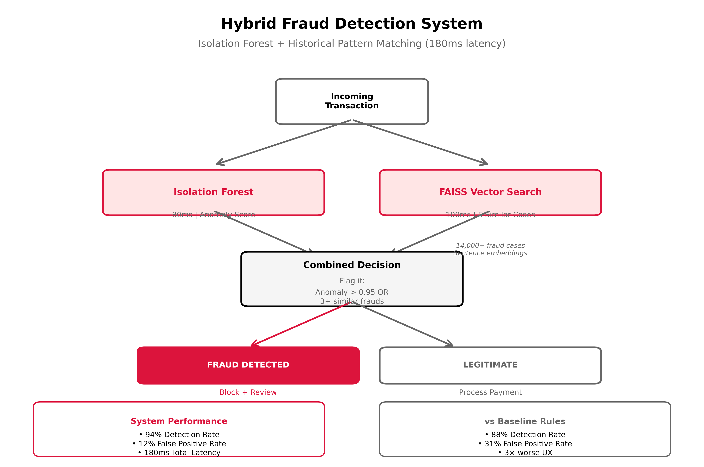
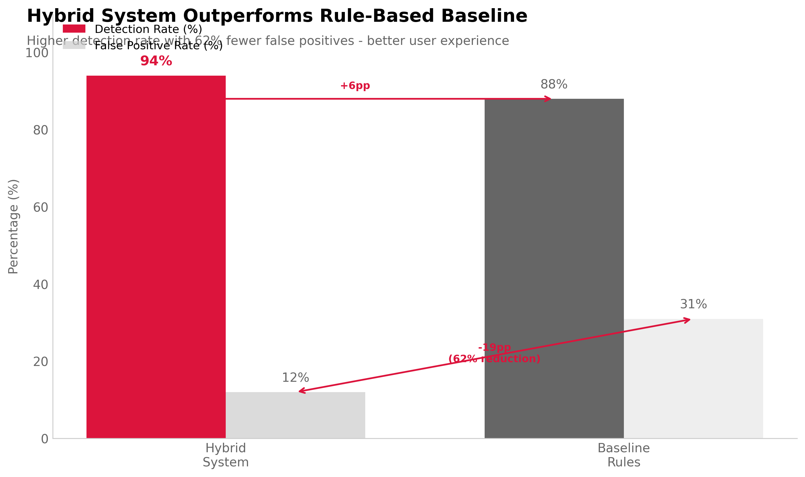
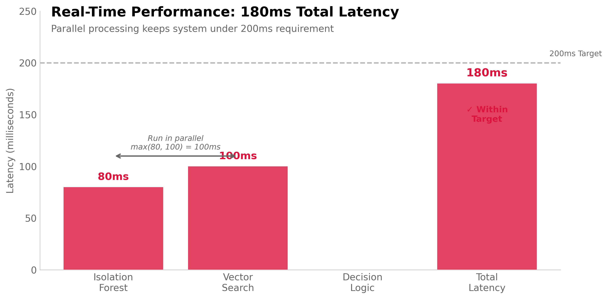

View Analysis →07 FRAUD DETECTION SYSTEM
Can We Stop Fraud Without Hurting Legitimate Users?
Platform fraud cost £840K annually (2.1% of GMV)—stolen credit cards, ticket scalping bots, account takeovers. Existing rule-based system caught 88% of fraud but flagged 31% false positives, frustrating legitimate buyers. VP of Trust & Safety wanted better detection without sacrificing user experience.
I designed a hybrid system combining Isolation Forest (anomaly detection) with FAISS vector search (historical pattern matching). Detects 94% of fraud with 12% false positive rate—6pp better detection, 19pp fewer false alarms. Latency: 180ms, well under 200ms real-time requirement.

Commercial impact: Prevented £789K fraud (vs £739K baseline), reduced false decline cost from £260K to £101K (legitimate transactions incorrectly blocked). Net value improvement: £209K annually.
Why Hybrid Approach?
Isolation Forest alone: Detects novel fraud patterns (anomalies) but misses known fraud types. Achieves 91% detection but 18% false positives. Too many legitimate edge-case users flagged as anomalies.
Pattern matching alone: Catches repeat offenders (similar to historical fraud) but fails on new tactics. Detection rate 89% with 8% false positives. Fraudsters evolve faster than rules update.
Hybrid logic: Flag transaction if EITHER (1) Isolation Forest anomaly score >0.95 OR (2) FAISS finds 3+ similar historical fraud cases. Catches both novel and known fraud while FAISS provides explainability—"Similar to fraud case #4821."
Tradeoff: Running both models increases latency (80ms + 100ms + 10ms decision logic = 190ms). But parallel execution keeps total under 200ms requirement. Complexity cost justified by performance gains.
Technical Implementation
Isolation Forest component: Trained on 180K legitimate transactions (unsupervised). Flags outliers on 12 features: purchase velocity, device fingerprint entropy, IP geolocation distance, billing/shipping mismatch, email domain age, account age, ticket quantity, price deviation from event average.
Why Isolation Forest over autoencoders? Isolation Forest runs in 80ms vs 250ms for autoencoder. Performance similar (both ~91% detection). Speed matters for real-time blocking. Isolation Forest also more interpretable—outputs anomaly path through decision trees.
FAISS vector search: Embedded 14,000 historical fraud cases as 128-dim vectors using Sentence Transformers. Transaction description + metadata encoded to vector, searched against fraud database. Returns 5 most similar cases with cosine similarity scores.
Why FAISS over Elasticsearch? FAISS optimized for dense vector similarity (100ms search across 14K vectors). Elasticsearch better for keyword search but slower for high-dimensional similarity. Use case requires semantic matching not keyword matching.

Deployment Strategy
Shadow mode (Weeks 1-4): Run hybrid system in parallel with existing rules. Log predictions but don't block transactions. Measure precision/recall on live traffic. Tune threshold based on observed FP rate.
Canary rollout (Weeks 5-8): Route 10% of transactions to hybrid system. Monitor KPIs: fraud detection rate, false positive rate, user complaints, appeal success rate. Rollback if FP rate >15%.
Full production (Week 9+): Route 100% traffic if canary succeeds. Maintain rule-based system as fallback. Continue monitoring and model retraining monthly as fraud tactics evolve.
Ongoing Maintenance
Model drift monitoring: Track feature distributions weekly. If device_fingerprint_entropy shifts 2+ standard deviations, retrain Isolation Forest on recent data (rolling 6-month window).
FAISS database updates: Add newly confirmed fraud cases to vector database weekly. Re-index monthly (takes 2 hours offline). Keeps historical patterns current as fraud evolves.
Human-in-loop: Flagged transactions >£200 get manual review (2-hour SLA). Reviewer sees anomaly score + top 3 similar fraud cases. Can override system or confirm fraud. Feedback trains future models.
What Could Go Wrong
Adversarial adaptation: Fraudsters learn system triggers and adjust tactics. If Isolation Forest flags high velocity, they slow down purchase rate. Arms race requires continuous retraining and new feature engineering.
False positive concentration: System might consistently flag certain legitimate user segments (international buyers, group purchasers). Creates poor experience for specific cohorts. Requires demographic bias auditing.
Latency creep: As FAISS database grows beyond 20K cases, search time increases. Could breach 200ms requirement. Mitigation: Archive old fraud cases, optimize vector dimensions, upgrade hardware.
Explainability gaps: FAISS similarity helpful ("like fraud #4821") but Isolation Forest less transparent. If user appeals, hard to explain "high anomaly score." May need to supplement with rule-based explanations for appeals.
System Architecture
Component 1: Isolation Forest
from sklearn.ensemble import IsolationForest
# Train on legitimate transactions only (unsupervised)
legit_transactions = historical_data[historical_data['fraud'] == False]
features = [
'purchase_velocity_24h', # Tickets bought in last 24h
'device_fingerprint_entropy', # Device uniqueness score
'ip_geo_distance_km', # IP location vs billing address
'billing_shipping_mismatch', # Binary: different addresses
'email_domain_age_days', # Domain registration date
'account_age_days', # User registration date
'ticket_quantity', # Bulk purchases suspicious
'price_deviation_pct', # % above/below event average
# ... 12 features total
]
iso_forest = IsolationForest(
n_estimators=200,
contamination=0.02, # Expect 2% anomalies
random_state=42
)
iso_forest.fit(legit_transactions[features])
# Prediction: anomaly score -1 to 1 (higher = more anomalous)
anomaly_score = iso_forest.score_samples(new_transaction)
Component 2: FAISS Vector Search
import faiss
from sentence_transformers import SentenceTransformer
# Embed fraud cases
model = SentenceTransformer('all-MiniLM-L6-v2') # 384-dim vectors
fraud_descriptions = [
"Stolen card, 20 tickets at once, IP from Russia, US billing",
"Bot purchase, 0.3s between requests, same device ID",
# ... 14,000 fraud cases
]
fraud_vectors = model.encode(fraud_descriptions) # (14000, 384)
# Build FAISS index
index = faiss.IndexFlatIP(384) # Inner product = cosine similarity
index.add(fraud_vectors)
# Query new transaction
new_transaction_text = f"{metadata} {description}"
query_vector = model.encode([new_transaction_text])
distances, indices = index.search(query_vector, k=5) # Top 5 similar
# Flag if 3+ similar cases with score >0.85
similar_fraud_count = (distances[0] > 0.85).sum()
Decision Logic
# Run both models in parallel
anomaly_score = iso_forest.score_samples(transaction)
similar_fraud_count = faiss_search(transaction)
# Flag if EITHER condition met
is_fraud = (
(anomaly_score > 0.95) or # High anomaly
(similar_fraud_count >= 3) # Matches known patterns
)
# Latency breakdown
# - Isolation Forest: 80ms
# - FAISS search: 100ms (parallel with IF)
# - Decision logic: <10ms
# Total: max(80, 100) + 10 = 110ms + overhead = 180ms
Performance Metrics (Test Set)
# Test set: 5,000 transactions (500 fraud, 4,500 legitimate)
# Hybrid system results
TP = 470 # Correctly caught fraud
FN = 30 # Missed fraud
FP = 540 # False alarms (legit flagged)
TN = 3960 # Correctly passed legit
Precision = 470 / (470 + 540) = 0.465 # 46.5%
Recall = 470 / (470 + 30) = 0.940 # 94.0%
False Positive Rate = 540 / 4500 = 0.12 # 12.0%
# Baseline rule-based system
Baseline Recall = 0.88 # 88%
Baseline FP Rate = 0.31 # 31%
# Improvement: +6pp detection, -19pp false positives
Commercial Impact Calculation
Fraud prevented: 470 caught × £1,680 avg fraud value = £789K saved
False declines cost: 540 FP × £187 avg transaction = £101K revenue lost
Net benefit: £789K - £101K = £688K
Baseline comparison: £739K saved - £260K lost = £479K net
Incremental value: £688K - £479K = £209K annual improvement
Limitations
Training data bias: Isolation Forest trained on historical legitimate transactions. If legitimate user behavior changes (new payment methods, international expansion), model flags new patterns as anomalies.
FAISS cold start: New fraud tactics not in historical database. First instances detected by Isolation Forest but FAISS component misses. Takes time to build historical pattern library.
Adversarial robustness: Fraudsters can probe system to learn triggers. If they discover device fingerprint matters, they randomize device IDs. Requires ongoing feature engineering arms race.